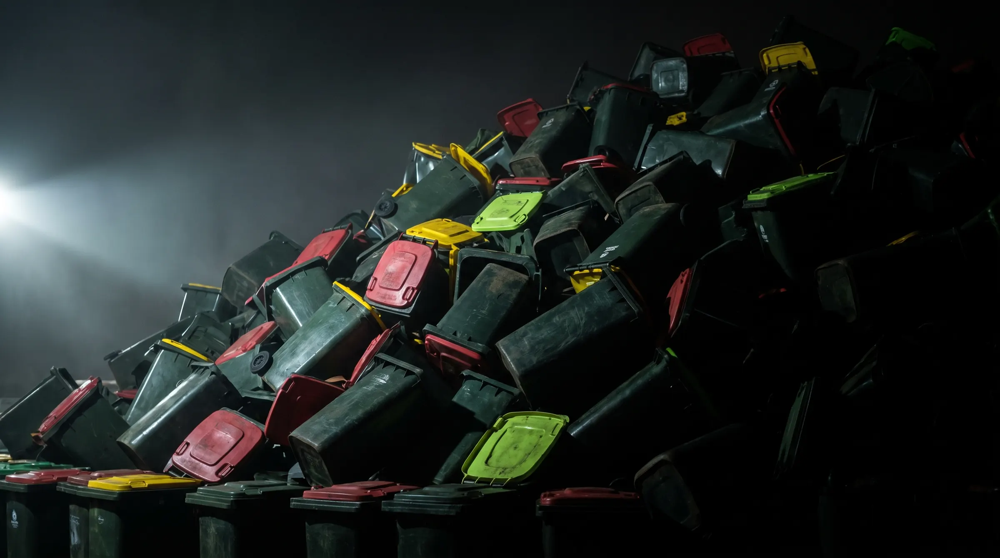
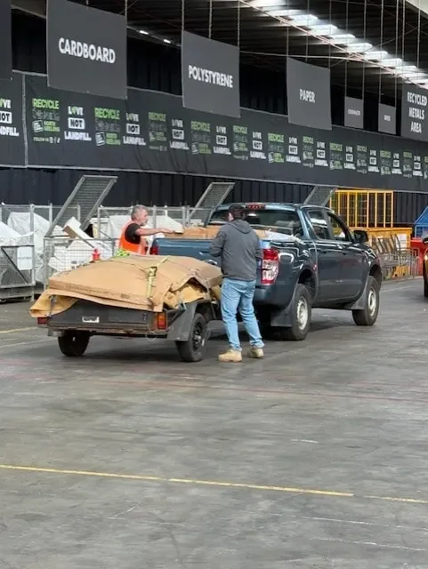
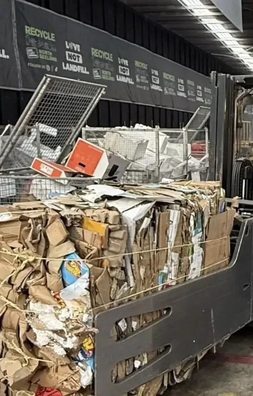
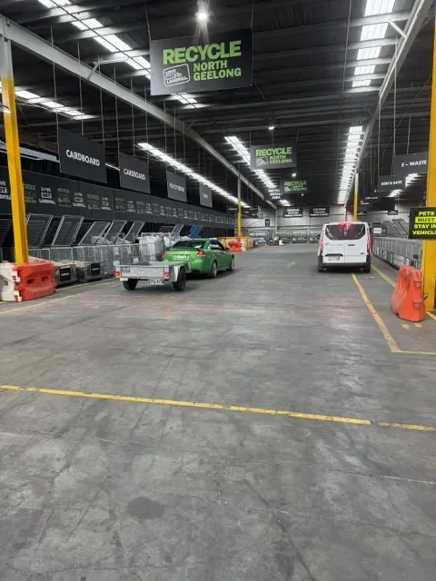

Recycling at North Geelong/A Recycle Group partnership
Transforming plastic recycling across Australia.
We recycle wheelie bins, car bumper bars and plastic pallets. Collected in Sydney, Canberra and Adelaide, recycled at North Geelong.
Why we exist
In 2023–24, Australia recovered about 14% of the plastic that reached end of life. The other 86% wasn’t. Wheelie bins, bumper bars and pallets are some of the easiest plastics to recycle, and too many still go to landfill. We recycle them.
Recovery figure: Australian Plastics Flows and Fates 2023–24, as reported by WMRR (2025).
Who we work with
If you’ve got these, we want them.
What we take
Three things. Recycled properly.
 01 / 03
Wheelie bins
Wheelie bin recycling →
01 / 03
Wheelie bins
Wheelie bin recycling →
 02 / 03
Car bumper bars
Bumper bar recycling →
02 / 03
Car bumper bars
Bumper bar recycling →
 03 / 03
Plastic pallets
Plastic pallet recycling →
03 / 03
Plastic pallets
Plastic pallet recycling →
Other rigid plastics? Call and ask on 0460 555 222.
How it works
One call. We do the rest.
- 01Call or email
Tell us what you’ve got, roughly how much, and where it is.
- 02We arrange it
We confirm what we can take and arrange collection or delivery to North Geelong.
- 03Kept separate
Each stream and polymer runs on its own, so nothing gets mixed.
- 04Made new
Stripped, shredded and washed into clean flake for new bins, pallets, crates and pipe.
- Streams separated at North Geelong
- EPA Victoria R000312600
- ISO 9001 · 14001 · 45001
- Sydney ≈925 km
- Canberra ≈715 km
- Adelaide ≈700 km
- A tonne, from 1 July 2026
- Up from $58.80 in 2009–10
- Victoria, metro $177.19
Our site
North Geelong.
Open and working.
Real photographs of the site where your plastic is recycled.
See our site →





Talk to us